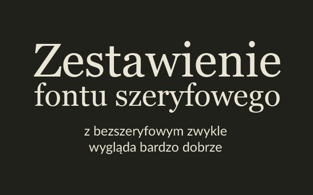
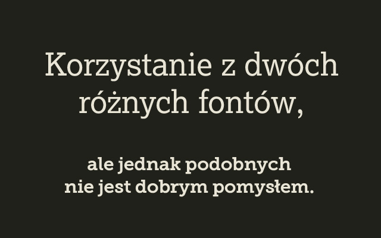
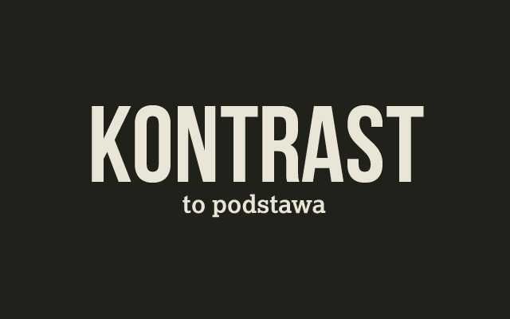
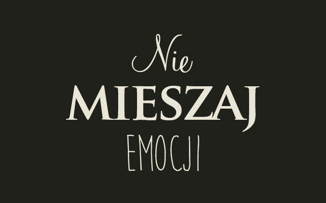

Używanie dwóch bardzo odmiennych krojów pisma bazując na krojach szeryfowych i bezszeryfowych może zlikwidować nudnie wyglądający skład tekstu i stworzyć bardziej interesującą i zachęcającą typografię. Oczywiście powinniśmy dobierać kroje trzymając się pewnych zasad, ale o nich też za chwilę. Tutaj dodam tylko, że stosując naprzemiennie dwa rodzaje fontów należy konsekwentnie przypisać jeden font do nagłówków, a drugi na przykład do głównego tekstu czyli do tak zwanego body. Dzięki temu uzyskamy swojego rodzaju hierarchię, a nagłówki zostaną wyraźnie oddzielone od reszty składu.

To prawda. Nigdy nie stosuj w jednym dokumencie dwóch różnych fontów, które jednak są do siebie podobne. Wiąże się to z nieprofesjonalnym wyglądem Twojego składu. Lepiej jeśli kroje będą ewidentnie od siebie różne i na pierwszy rzut oka będą odróżniały przykładowo nagłówki od tekstu dziełowego czy od podtytułów.

Wysoki kontrast kolorystyczny między tłem a tekstem ułatwia czytanie i sprawia, że skład jest przejrzysty i łatwy w odbiorze. Dlatego staraj się utrzymać wysoki kontrast, ostrożnie dobierając kolory dla tekstu i tła. Para kolorów o najwyższym kontraście to oczywiście biel i czerń, ale jeśli musisz użyć innych kolorów to pamiętaj, aby nie były to podobne do siebie barwy np (niebieski i zielony, lub żółty i pomarańczowy).

Jeśli Twoja publikacja lub dokument ma bardziej poważny i oficjalny charakter to użyjesz oczywiście bardziej eleganckich krojów z rodziny fontów szeryfowych. Błędem natomiast było by dołożenie do tej publikacji jeszcze jednego, bardziej wesołego kroju liter lub/i fontu o mniej oficjalnym charakterze.